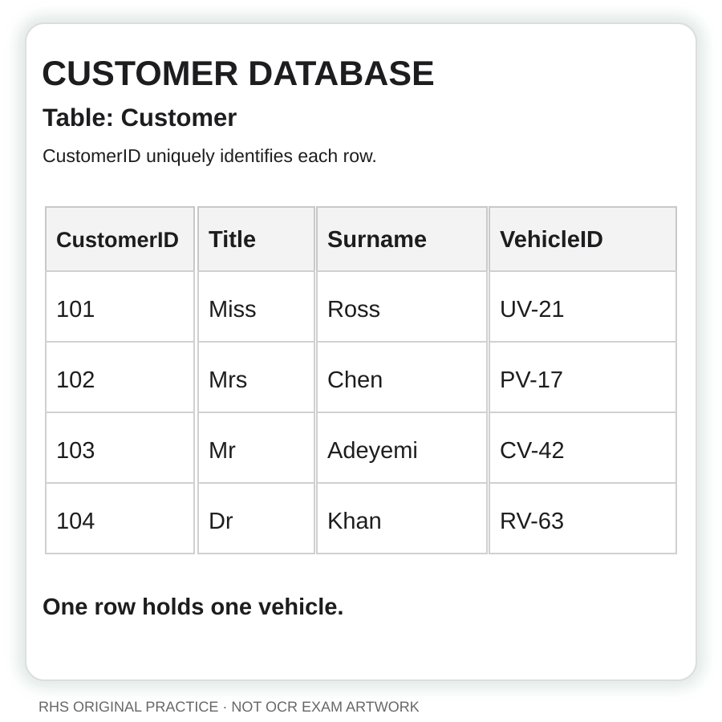
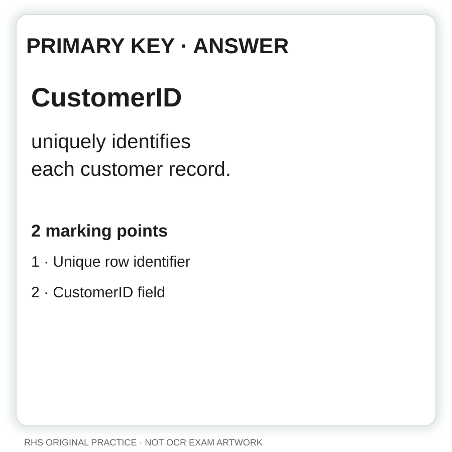
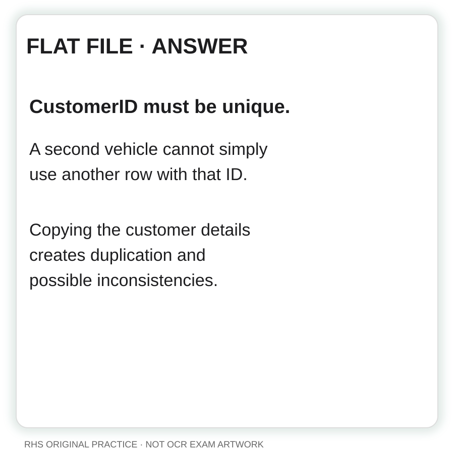
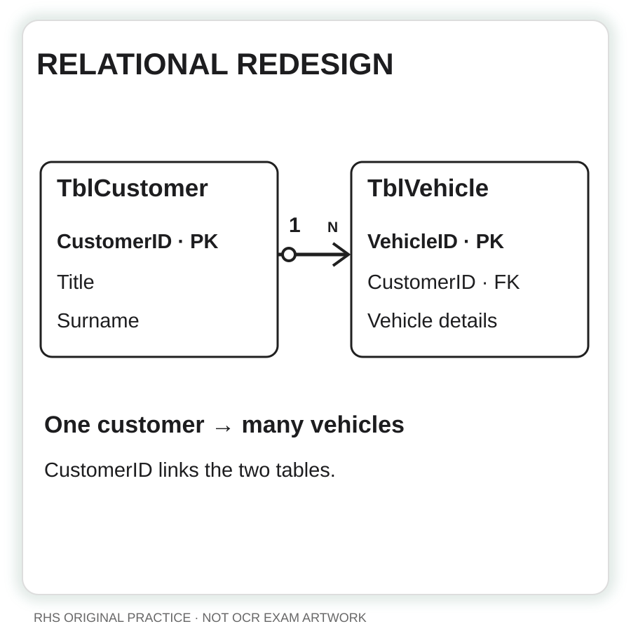

Q1(d)(i) · 2 marks
Define the purpose of a primary key and identify the primary key field in this Customer table.
ANSWER · MARKING
CustomerID uniquely identifies each row. [2]

Q1(d)(ii) · 4 marks
Write SQL returning only CustomerID and Surname where Title is exactly 'Miss' or 'Mrs'. Use the table named Customer.
ANSWER · MARKING
SELECT CustomerID, Surname FROM Customer WHERE Title = 'Miss' OR Title = 'Mrs'; [4]

Q1(d)(iii) · 2 marks
Explain one problem caused by this single-row-per-customer design when a customer has a second vehicle.
ANSWER · MARKING
The unique CustomerID prevents another row for the same customer; duplicating the record causes redundancy and potential inconsistencies. [2]

Q1(d)(iv) · 5 marks
Describe a relational redesign supporting several vehicles per customer without duplicating customer details. Name the tables, keys and cardinality.
ANSWER · MARKING
TblCustomer(CustomerID PK, Title, Surname). TblVehicle(VehicleID PK, CustomerID FK, details). One-to-many from customer to vehicle. [5]
